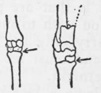

Skinning
Description
This section is from the book "Camping And Woodcraft", by Horace Kephart. Also available from Amazon: Camping and Woodcraft.
Skinning
■ This is your first buck, and you wish to save the head for mounting. For this the skin of the whole neck must be preserved, clear back to the shoulders. Cleanse away any blood that may have issued from the nose and mouth, and stuff some dry moss, or other absorbent, in the beast's mouth. Stick your big knife into a log alongside; it is only to look at, for the present.
Open your jack-knife, insert the point, edge up, where the neck joins the back, and cut the skin in a circle around the base of the neck, running from the withers down over the front of the shoulder-blade to the brisket or point of the breast on each side. Do not skin the head at present—you may not have time for that. Insert the point of the knife through the skin over the paunch, and, following the middle line of the chest, slit upward to meet the cut around the neck. Then reverse, and continue the slit backward to the end of the tail, being careful not to perforate the walls of the belly. Then slit along the inside of each leg from the hoof to the belly-slit. If you wish to save the feet for mounting, be particular to rip the skin in a straight line up the under side of the leg, starting by inserting the point of the knife between the heel-pads.
Now comes a nice trick, that of severing the shanks. Nearly every inexperienced person starts too high. Study the accompanying illustrations sf these joints, noting where the arrow points, 'ukich is the place to use your knife. In a deer the joint is about an inch and a half below the hock on the hind leg, and an inch below the knee on the fore leg. Cut square across through skin and muscles, in front, and similarly behind; then, with a quick pull backward against your knee, snap the shank off. The joint of the fore leg is broken in a similar manner, excepting that it is snapped forward.
Fig. 115. The Place to Use Your Knife. From Forest and Stream.
Having stripped the vertebrae from the tail, now peel the skin off the whole animal, from the shoulders downward, assisting with your closed fist, and, where necessary, with the knife; but wherever the knife is used be careful to scrape the skin as clean as you can, without cutting it, for every adhering bit of fat, flesh, or membrane must be thoroughly removed before the skin is ready for tanning, and that is easier to do now than after it dries. The whole operation of skinning is much easier while the animal is still warm than after the body has become cold. To skin a frozen animal is a desperately mean job. I have known four old hunters to work nearly a whole afternoon in skinning a frozen bear.
The skin of the body and limbs having been removed, stretch it out flat, hair side down, alongside of you to receive portions of the meat as it is butchered.
Continue to:
- prev: Butchering Deer
- Table of Contents
- next: Gralloching